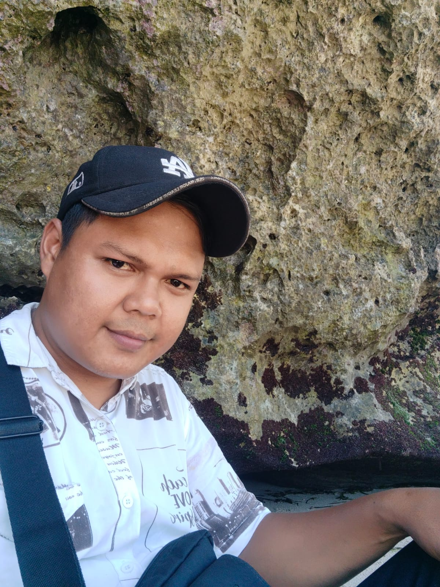

Local knowledge
Quiet viewpoints, the right time to arrive, and the stories behind each place.
Discover Bali with a Local Guide

Hello, my name is Kade Dana, and I am a local guide based in Bali. I enjoy sharing the beauty of my island with visitors from around the world, introducing them to its stunning landscapes, rich cultural heritage, and the everyday life of the local community. My aim is to make every journey comfortable, enjoyable, and meaningful by helping guests discover Bali at their own pace. From peaceful rice terraces and beautiful beaches to traditional villages and cultural landmarks, I hope to offer a genuine glimpse into what makes Bali such a special place.
Every trip is an opportunity to create wonderful memories, appreciate local traditions, and experience the island with care and respect. I look forward to welcoming you to Bali and helping you make the most of your time here. Private and personalized tours across Bali, thoughtfully arranged around your interests, preferences, and travel style.
Chat on WhatsAppQuiet viewpoints, the right time to arrive, and the stories behind each place.
Every trip is built around your pace, interests and travel style.
Message on WhatsApp and get a reply with ideas and a clear plan.